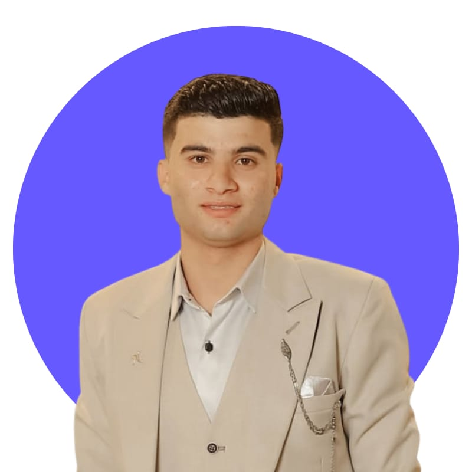

I build the pipelines behind good decisions.
Data Analyst training toward Data Engineering & Big Data through DEPI and NTI — I clean messy datasets, model them properly, and turn them into dashboards people actually trust, for teams anywhere in the world.

From raw rows to real decisions
I'm Mahmoud Sobhy, a Business Information Systems student at Delta Higher Institute for Computers in Mansoura, Egypt, graduating in 2027. I work at the point where messy spreadsheets become something a business can actually act on.
I'm currently a Data Analysis Trainee with the Digital Egypt Pioneers Initiative (DEPI), run by Egypt's Ministry of Communications and Information Technology, and a Big Data Trainee with the National Telecommunication Institute (NTI) — two tracks that push me from analysis into the engineering side of data: preprocessing, modeling, and building things that hold up at scale.
Every project on this page follows the same instinct: don't visualize data until it's clean, and don't trust a dashboard until you understand the pipeline feeding it.
Collect
Pull raw data from spreadsheets, exports and public datasets — orders, transactions, survey responses.
Clean & Transform
Power Query and Python to fix types, handle nulls, and reshape tables into something modelable.
Model
Build relational data models and pivot structures — branches, products, customers, time.
Visualize
Power BI and Excel dashboards designed around the questions the business is actually asking.
Decide
KPIs and insights that hold up under a follow-up question, not just a first glance.
What I work with
Grouped by where each tool sits in the pipeline — from raw query to finished decision.
Query & Languages
BI & Visualization
Data Prep & Engineering
Analytical Methods
Collaboration
Data, cleaned and put to work
Five real datasets taken from raw import to finished dashboard. Source files are downloadable on each card.
Superstore Sales & Profitability Analysis
Cleaned and modeled a multi-table US retail dataset — orders, returns, shipping cost and sales team — with Power Query, then built pivot-driven KPIs for net sales, profit by category and region, and delivery duration.
Download workbookSupermarket Sales Performance Dashboard
Interactive Power BI dashboard analyzing branch, city and product-line performance — gross income, quantity sold and sales trends — to surface the top-performing locations and product lines.
Download .pbixWalmart Weekly Sales Analysis
Analyzed multi-store weekly sales against holiday periods and the unemployment rate to surface seasonal patterns, with min / max / average sales KPIs tracked month over month.
Download .pbixRetail Sales Data Model
Modeled a multi-table retail dataset — brands, branches, products, payment methods and customers — into a Power Pivot data model, then built pivot views for total sales and active customers.
Download workbookReal Estate Market Analysis
Cleaned and transformed a Russian real-estate dataset (Kaggle) using Power Query, then built a Power BI dashboard surfacing housing-price trends and regional insights.
Source dataset — KaggleWhere the training is coming from
Data Analysis Trainee
Digital Egypt Pioneers Initiative (DEPI) · Ministry of Communications & ITTraining in data analysis, visualization and business analytics using Power BI and Python. Working real-life case studies applying the DMAIC and PDCA frameworks.
Big Data Trainee
National Telecommunication Institute (NTI)Practical, hands-on grounding in Big Data tooling, with a focus on data preprocessing and exploration at scale.
Academic foundation
B.Sc. Business Information Systems
Delta Higher Institute for Computers · Talkha, MansouraCoursework bridging business analysis and information systems — databases, systems analysis and business process design — the foundation underneath the analytics and pipeline work in this portfolio.
Languages
Open to
- Remote data analysis roles with international teams
- Data-focused scholarship opportunities abroad
- Collaborations on real-world analytics case studies
Let's build something amazing together
Have a dataset that needs cleaning, a dashboard that needs building, or a role that needs filling? I'd like to hear about it.
Start a conversation